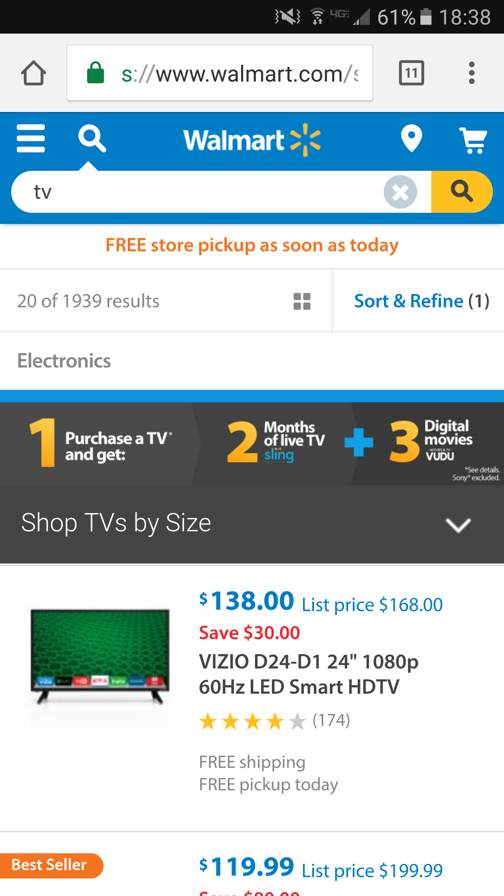

Target Audience
WalMart
1. Some demographics for this site are: Age: 20-60; Income: Lower Middle Class; Education: Any; Geographic Location: Anywhere
2. It met my needs by being simple, effective, and to the point with goods I was looking for that day. I was able to search for my goods with the search bar at the top. I was able to click on the items and see whether they or other stores nearby had that item.
3. The content was organized in a way that I could filter and refine my search to my preferences. It also kept the search bar, logo, for home page access, and the menu module at the top so you could always get back easily to it.
4. The site made my mobile experience enjoyable by being consistent in its delivery of simplicity. I was able to go from product to product easily by using the search bar and refining the search to match exactly what I wanted within just a few touches of the screen.
5. Yes, the site did facilitate to people in a mobile enviroment. It did so by never having me zoom in or out to experience the view of the product. It also optimized its view to make sure nothing was cramped together and laying overtop of one another. It facilitated menus that were clickable and by which you could scroll through.
Persona
| Persona: | Multi-Millionare |
| Name: | |
| Job Title: | |
| Demographics: | |
| Goals and Tasks: | |
| Environment: | |
| Quote: |